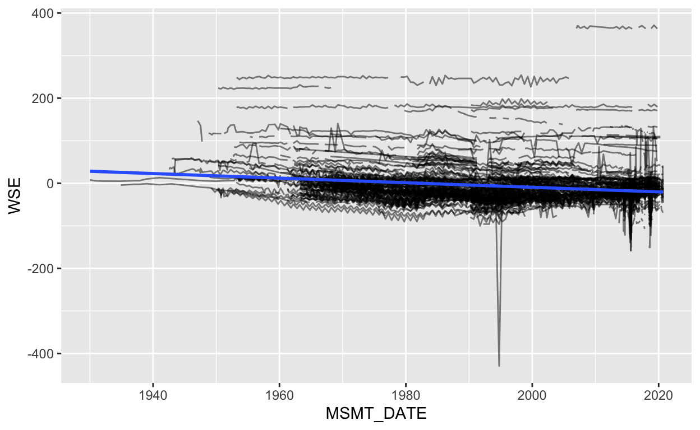
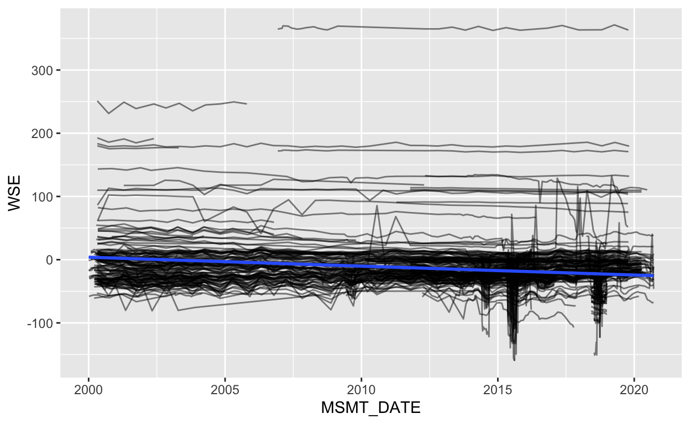
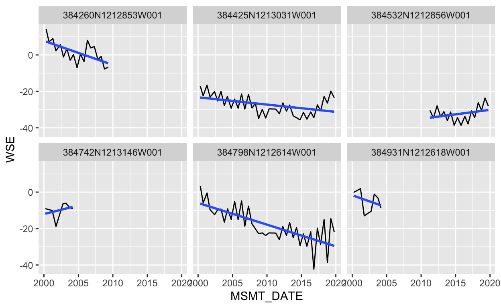
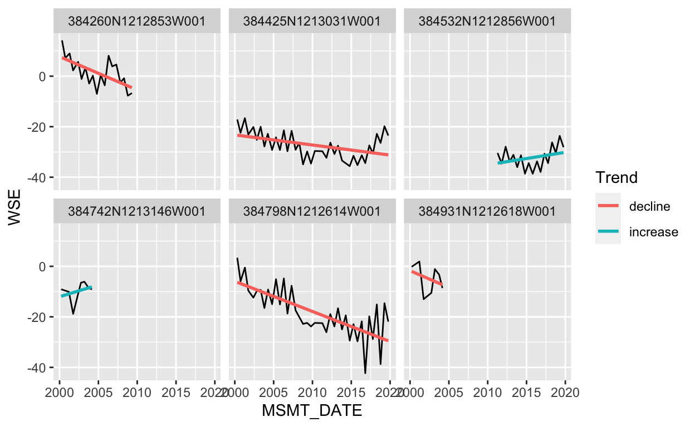
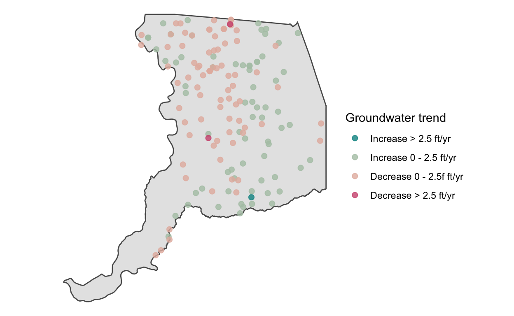
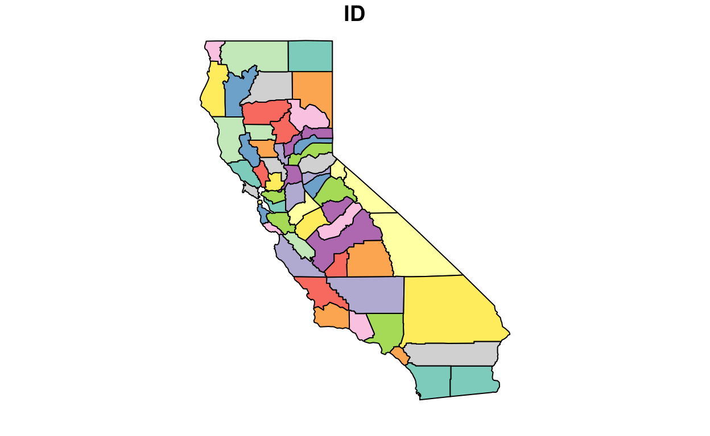

Learning objectives
- Practice functional programming with iterative workflows to power reproducible analyses
- Understand how to use nested lists within dataframes
- Practice conditional execution
- Discuss task schedulers and strategies to fully automate workflows
Reproducible workflows and automation
In this module, we extend lessons in functional programming from the previous module on iteration, as well as best practices discussed in the project management module to approach a case study. Special attention is paid to automation.
As you expand your ability to write R code, automation becomes possible. “Automation” can mean different things, but generally refers to the process of replacing time that you would spend on a workflow with a computer program, or an R script in the context of this course. The beauty of automation is that you can create workflows that would be nearly impossible to complete in a human lifetime, and run them thousands of times, all while you’re out on a coffee break. In some circles, this is sometimes jokingly referred to as, “making computers do your bidding.” Automation happens whenever you write a program that saves you time, freeing you to do other things.
The very act of writing an R script (or program) to perform analyses is automation, because you have automated the need to point and click through various tasks and type instructions at particular times, such as in a traditional point-and-click workflow.
However, any R program you write still needs a human to run it, and perhaps you have not one, but a chain of 5 scripts that are evaluated sequentially to import, clean, model, visualize, and output data. Someone needs to run the program. Another step up the automation ladder is to wrap these 5 scripts in a single program that calls them all in sequence, like a master switch. Instead of running 5 scripts, now we only need to run 1.
There is still further automation potential. We can write another program to call the “master switch” at specified times, fully remove ourselves from the pipeline, and allow the program will run all on its own (although it may require maintenance from time to time).
Figure 1: Automation is like watering a row of plants. Each program is like a bucket that waters one plant at a time. Wrapping the programs into a single “master switch” control script is like installing drip irrigation so that all plants are watered at once. In order to fully automate, we can set a task scheduler, which is like adding a timer onto our drip irrigation system.
We should always strive for at least a degree of automation represented by the left-most figure, with a set of programs for each step in our workflow, and functions abstracted out of these programs1 to improve readability and project organization.
Whether or not to write wrapper programs or configure task schedulers depends on the needs of the workflow. Guidance on when and when to not automate will be discussed in this module.
To demonstrate varying degrees of automation in a real-life example and extend our practice of functional programming, we will focus on a case study using the DWR’s Periodic Groundwater Level Database.
Case Study: groundwater level trend analysis
The California Department of Water Resources publishes a routine report on groundwater level conditions that shows groundwater level trends on a point-by-point basis. Short-term (i.e., 1, 3, and 5 year) and long-term trends (i.e., 10 and 20 years) are displayed in the report.

Figure 2: The “California Groundwater Conditions Update - Spring 2020”, DWR (2020) demonstrates the rate and direction of groundwater level change over different time periods, shown here is the 20000-2020 trend.
Our Task
Let’s imagine our task is to assess change in groundwater level across all stations and plot it on a map, just as we see in the report. In the sections that follow we will calculate groundwater level change trends at representative monitoring points in the Periodic groundwater level database we have been using in this course, and demonstrate best practices in creating a reproducible, automatable pipeline.
Along the way, we will also cover key concepts including:
- conditional execution
- functional programming with nested lists
- tips for writing helpful functions
- task scheduling
- logging
Import Data
To begin, let’s import data and join it. If your internet connection is slow, use: d <- read_csv(here("data", "gwl_sac.csv")) to skip the step below and read in a copy of the data from a github repository. If you want to see how to download this data, follow along with the code below2:
library(tidyverse)
library(here)
# urls for data
base_url <-
"https://data.cnra.ca.gov/dataset/dd9b15f5-6d08-4d8c-bace-37dc761a9c08/resource/"
urls <- paste0(
base_url,
c("af157380-fb42-4abf-b72a-6f9f98868077/download/stations.csv",
"bfa9f262-24a1-45bd-8dc8-138bc8107266/download/measurements.csv",
"f1deaa6d-2cb5-4052-a73f-08a69f26b750/download/perforations.csv")
)
# create directory and define paths to save downloaded files
dir.create(here("data", "pgwl"))
files_out <- here("data", "pgwl", basename(urls))
# download files
walk2(urls, files_out, ~download.file(.x, .y))
# read and combine - use datatable for speed and memory management
d <- map(files_out, ~data.table::fread(.x)) %>%
reduce(left_join, by = "SITE_CODE")
# d contains ~2.3 million observations: filter to Sacramento County
d <- filter(d, COUNTY_NAME == "Sacramento")
Map/Visualize the Data
Now that we have our Sacramento data in R either by downloading it with the code above or by reading it in directly with read_csv, let’s transform it to an sf object and plot just to sanity check that we’re indeed looking at Sacramento County groundwater levels.
library(sf)
library(mapview)
mapviewOptions(fgb = FALSE) # setting to help render map
# select only columns we will use in this analysis
d <- d %>%
select(SITE_CODE, MSMT_DATE, WSE, LONGITUDE, LATITUDE, WELL_DEPTH)
# convert to sf object
d <- st_as_sf(d, coords = c("LONGITUDE", "LATITUDE"), crs = 4269)
# take the first observation per SITE_CODE since they all have
# the same location, and plot
group_by(d, SITE_CODE) %>%
slice(1) %>%
ungroup() %>%
mapview(popup = NULL, layer.name = "Groundwater stations")
Model Trends in Data
Recall that we want to assess change in groundwater level across all stations and plot it on a map. In other words, assume we have the linear model describing a set of groundwater elevations (\(\hat{Y}_i\)), as a function of time (\(X_i\)), proportional to some unknown y-intercept (\(\beta_0\)) and coefficient (\(\beta_1\)) for a set of observations at times \(i = 1, ..., n\):
\[ \hat{Y}_i = \beta_0 + \beta_1(X_i) + \epsilon_i \]
Time alone is actually a poor predictor of groundwater level (and shouldn’t be interpreted in a strict statistical sense), but for our purposes, the linear model above is useful because the \(\beta_1\) coefficient can be interpreted as the average groundwater level trend at a monitoring site over some time frame. If \(\beta_1 > 0\), the average groundwater level is increasing, and if \(\beta_1 < 0\), it is decreasing. The magnitude of \(\beta_1\) tells us by how much the groundwater level is increasing or decreasing and can be plotted per monitoring site, and compared to other monitoring sites to understand the spatial distribution of groundwater level change in a region. In this example, our region of interest is Sacramento County, but in the spirit of automation, we will create a function that allows us to apply this workflow to any county, or even the entire state of California.
To apply a linear model to each monitoring site, we use the lm() function in base R. If we apply the function to our entire dataset, we end up with a linear model of all groundwater levels in Sacramento county:
ggplot(d) +
geom_line(aes(MSMT_DATE, WSE, group = SITE_CODE), alpha = 0.5) +
geom_smooth(aes(MSMT_DATE, WSE), method = "lm", se = FALSE)

Let’s filter out that one outlier (groundwater levels don’t just spike by hundreds of feet so rapidly like that), filter the date range of the data to the last 20 years, and replot. We can see a slight negative groundwater level trend over the basin, but this spatial average may be skewed by monitoring stations with more data than others and increased data density in more recent years.
# recent data without the obviously erroneous outlier
d_recent <- filter(d, WSE >-200 & MSMT_DATE >= lubridate::ymd("2000-01-01"))
ggplot(d_recent) +
geom_line(aes(MSMT_DATE, WSE, group = SITE_CODE), alpha = 0.5) +
geom_smooth(aes(MSMT_DATE, WSE), method = "lm", se = FALSE)

However, this isn’t quite what we need. What we need is a linear model for each and every one of the individual stations in this dataset. {ggplot2} is great for visualizing what we are looking for. For example, here are a few of the monitoring sites, each with a unique linear model, which can be viewed with facet_wrap().
d_recent %>%
filter(SITE_CODE %in% unique(d$SITE_CODE)[1:7]) %>%
ggplot() +
geom_line(aes(MSMT_DATE, WSE)) +
geom_smooth(aes(MSMT_DATE, WSE), method = "lm", se = FALSE) +
facet_wrap(~SITE_CODE)

Now, it’s time to calculate those numbers with lm(). We will use {broom} to tidy up model results in a clean dataframe. Note that because the class of our MSMT_DATE column is "POSIXct", the units returned for our coefficient \(\beta_1\) will be in \(ft/sec\) rather than the more intuitive \(ft/yr\), thus we define a function to handle the conversion from \(ft/sec\) to \(ft/yr\). For the entire dataset the average annual change in groundwater level over the 20 year timeframe is:
# convert from seconds to years
sec_to_yr <- function(sec){
yr <- sec * 31557600
return(yr)
}
# create the linear model and view output
m <- lm(WSE ~ MSMT_DATE, data = d_recent)
m
Call:
lm(formula = WSE ~ MSMT_DATE, data = d_recent)
Coefficients:
(Intercept) MSMT_DATE
4.614e+01 -4.462e-08 # tidy the model output with broom and convert ft/sec to ft/yr
broom::tidy(m) %>%
slice(2) %>%
mutate(estimate_ft_yr = sec_to_yr(estimate))
# A tibble: 1 x 6
term estimate std.error statistic p.value estimate_ft_yr
<chr> <dbl> <dbl> <dbl> <dbl> <dbl>
1 MSMT_DA… -4.46e-8 1.92e-9 -23.3 1.75e-117 -1.41From above, we see that the average annual decline is -1.41 \(ft/yr\).
Nested Lists
We could turn this linear model call into a function and loop over it with a for loop, saving each model result in a list element. We could also map this function over a list of dataframes created by split(d, d$SITE_CODE) (or the tidyverse equivalent, group_split(d, SITE_CODE)), but there’s a better way with functional programming.
We will use nested lists, specifically with the tidyr::nest() function, which allows us to convert a dataframe grouped by some variable (in our case it will be SITE_CODE) into a dataframe with a column that “nests” the data for each unique grouping variable. For instance:
# A tibble: 302 x 2
# Groups: SITE_CODE [302]
SITE_CODE data
<chr> <list>
1 384931N1212618W001 <sf [7 × 4]>
2 384742N1213146W001 <sf [7 × 4]>
3 384798N1212614W001 <sf [38 × 4]>
4 384532N1212856W001 <sf [18 × 4]>
5 384425N1213031W001 <sf [38 × 4]>
6 384260N1212853W001 <sf [19 × 4]>
7 384251N1213346W001 <sf [7 × 4]>
8 384526N1211695W001 <sf [112 × 4]>
9 384511N1212360W001 <sf [19 × 4]>
10 384252N1211997W001 <sf [9 × 4]>
# … with 292 more rowsThe resulting dataframe has a number of rows equal to the length of unique values in the SITE_CODE column, and a column called data with nested dataframes, one for each SITE_CODE (grouping variable). Notice that in the data column above, each nested dataframe has 4 columns, but a differing number of rows (groundwater level observations). This makes sense because each monitoring station has the same number of fields, but a different number of samples. Let’s inspect the first dataframe:
l$data[[1]]
Simple feature collection with 7 features and 3 fields
Geometry type: POINT
Dimension: XY
Bounding box: xmin: -121.262 ymin: 38.4931 xmax: -121.262 ymax: 38.4931
Geodetic CRS: NAD83
# A tibble: 7 x 4
MSMT_DATE WSE WELL_DEPTH geometry
<dttm> <dbl> <dbl> <POINT [°]>
1 2004-03-01 00:00:00 -8.6 780 (-121.262 38.4931)
2 2003-10-01 00:00:00 -3.3 780 (-121.262 38.4931)
3 2003-03-15 00:00:00 -1.1 780 (-121.262 38.4931)
4 2002-10-01 00:00:00 -10.5 780 (-121.262 38.4931)
5 2001-10-01 00:00:00 -13 780 (-121.262 38.4931)
6 2001-03-15 00:00:00 1.9 780 (-121.262 38.4931)
7 2000-03-15 00:00:00 -0.2 780 (-121.262 38.4931)With nested data, we we can mutate new columns on the dataframe based onto the nested data column by mapping over each dataframe. For instance, we can add a linear model:
d_recent %>%
group_by(SITE_CODE) %>%
# nest the data per SITE_CODE grouping variable
nest() %>%
mutate(
# map a linear model onto the data
model = map(data, ~lm(WSE ~ MSMT_DATE, data = .x))
)
# A tibble: 302 x 3
# Groups: SITE_CODE [302]
SITE_CODE data model
<chr> <list> <list>
1 384931N1212618W001 <sf [7 × 4]> <lm>
2 384742N1213146W001 <sf [7 × 4]> <lm>
3 384798N1212614W001 <sf [38 × 4]> <lm>
4 384532N1212856W001 <sf [18 × 4]> <lm>
5 384425N1213031W001 <sf [38 × 4]> <lm>
6 384260N1212853W001 <sf [19 × 4]> <lm>
7 384251N1213346W001 <sf [7 × 4]> <lm>
8 384526N1211695W001 <sf [112 × 4]> <lm>
9 384511N1212360W001 <sf [19 × 4]> <lm>
10 384252N1211997W001 <sf [9 × 4]> <lm>
# … with 292 more rowsNow we have a linear model output object per SITE_CODE, but let’s not stop there. Let’s also mutate new columns with the intercept (\(\beta_1\)), the direction and magnitude of the intercept, convert units to \(ft/yr\), and unnest() the data.
d_recent <- d_recent %>%
group_by(SITE_CODE) %>%
# nest the data per SITE_CODE grouping variable
nest() %>%
mutate(
# map a linear model across data, extract slope magnitude & direction
model = map(data, ~lm(WSE ~ MSMT_DATE, data = .x)),
b1 = map(model, ~coefficients(.x)[["MSMT_DATE"]]),
b1 = map(b1, ~sec_to_yr(.x)),
direction = map(b1, ~ifelse(.x >= 0, "increase", "decline")),
# duration of the data in units of years so we know how the period
# over which the linear model is estimated
length_yr = map(data, ~as.numeric(diff(range(.x$MSMT_DATE))) / 365)
) %>%
# unnest all columns so we can access values
unnest(c(data, b1:length_yr)) %>%
select(-model)
Take a moment to View(d_recent) and inspect the new columns.
Now we can visualize trends for each station like before. Note that not all records are a full 20 years long!
d_recent %>%
filter(SITE_CODE %in% unique(d$SITE_CODE)[1:7]) %>%
ggplot() +
geom_line(aes(MSMT_DATE, WSE)) +
geom_smooth(aes(MSMT_DATE, WSE, color = direction), method = "lm", se = FALSE) +
facet_wrap(~SITE_CODE) +
labs(color = "Trend")

Don’t forget that these trends have a spatial component. Let’s now only visualize sites with a duration_yr of 5 years or more.
# slice the first observation per SITE_ID (for location) and
# re-convert to sf which is lost during nest and unnest
d_map <- d_recent %>%
group_by(SITE_CODE) %>%
slice(1) %>%
ungroup() %>%
st_as_sf() %>%
filter(length_yr >= 5)
# create a bin for trend magnitude that matches DWR bins (Fig 2)
d_map$bin <- cut(
d_map$b1,
breaks = c(-1000, -2.5, 0, 2.5, 1000),
labels = c("Increase > 2.5 ft/yr", "Increase 0 - 2.5 ft/yr",
"Decrease 0 - 2.5f ft/yr", "Decrease > 2.5 ft/yr")
)
# sacramento county polygon
sac <- st_read(here("data", "shp", "sac", "sac_county.shp")) %>%
st_transform(st_crs(d_map))
Reading layer `sac_county' from data source
`/Users/rich/Documents/GitHub/r4wrds/intermediate/data/shp/sac/sac_county.shp'
using driver `ESRI Shapefile'
Simple feature collection with 1 feature and 9 fields
Geometry type: POLYGON
Dimension: XY
Bounding box: xmin: -13565710 ymin: 4582007 xmax: -13472670 ymax: 4683976
Projected CRS: WGS 84 / Pseudo-Mercator# plot direction
ggplot() +
geom_sf(data = sac) +
geom_sf(data = d_map, aes(fill = direction), pch = 21, size = 2) +
theme_void() +
labs(fill = "Groundwater trend")
# plot magnitude bins
ggplot() +
geom_sf(data = sac) +
geom_sf(data = d_map, aes(color = bin), size = 2, alpha = 0.8) +
rcartocolor::scale_color_carto_d("Groundwater trend", palette = "TealRose") +
theme_void()

The map above suggest there are only 3 locations in the basin that show an absolute change of more than 2.5 \(ft/yr\). Most of the longer term monitoring locations have an annual absolute rate of change within 0-2.5 \(ft/yr\). A quick comparison with Figure 2 suggests that our calculated groundwater level trends are similar in magnitude.
How to write helpful functions
Everything we’ve done until this point is valuable, but is it reproducible? In the sense that we can re-run these scripts on new data, yes, but we can apply project management best practices and refactor our code into functions and programs (scripts) that are easy to re-run (Figure 1, left-most situation). We can go one step further and wrap everything into a control script (Figure 1, center situation), and in the next section, we’ll discuss how to fully automate (Figure 1, right-most situation).
In the spirit of “don’t repeat yourself” (DRY), it’s often said:
If you copy paste a workflow more than 3 times, write a function.
Recall that in this case study, we want to reevaluate groundwater level trends twice per year, once in spring and once in fall. We decide to save time in the future by abstracting these tasks into a set of functions and a central control script. We also know that others will need to use this same workflow, so we strive to turn our analysis into a reproducible tool for others and include helpful messaging, errors, and conditional execution (i.e., if statements) in the code.
1. Download
Let’s begin with the download step. Save this as functions/f_wcr_download.R. Notice that we add a dir_out argument that allows a user to specify a directory to save files to. If this path doesn’t exist, we create it. Also, we allow users to specify the urls, so if case they change in the future, this function need not change.
# download wcr data
f_wcr_download <- function(dir_out, urls){
# create directory and define paths to save downloaded files
if(! dir.exists(dir_out)){
dir.create(dir_out)
}
# output file paths
files_out <- file.path(dir_out, basename(urls))
# download files
walk2(urls, files_out, ~download.file(.x, .y))
}
2. Read
Next, the import function should be saved as functions/f_wcr_import.R. Let’s design it so that the user provides a county and a vector of input files. The function returns a helpful message in case they don’t provide a valid county. Along the way, we also provide helpful messages with cat() statements that print messages to the terminal as the function moves along. Messages like this are can be considered rudimentary form of logging which provides a user information on the status of a function, and may help diagnose and fix errors that may arise by showing the last place where a successful cat() message printed.
# import downloaded wcr data
f_wcr_import <- function(county, files_in){
# valid counties from entire dataset, i.e.,
# dput(sort(unique(d$COUNTY_NAME)))
counties_valid <-
c("Alameda", "Alpine", "Amador", "Butte", "Calaveras", "Colusa",
"Contra Costa", "Del Norte", "El Dorado", "Fresno", "Glenn",
"Humboldt", "Imperial", "Inyo", "Kern", "Kings", "Klamath, OR",
"Lake", "Lassen", "Los Angeles", "Madera", "Marin", "Mariposa",
"Mendocino", "Merced", "Modoc", "Mono", "Monterey", "Napa", "Nevada",
"Orange", "Placer", "Plumas", "Riverside", "Sacramento", "San Benito",
"San Bernardino", "San Diego", "San Francisco", "San Joaquin",
"San Luis Obispo", "San Mateo", "Santa Barbara", "Santa Clara",
"Santa Cruz", "Shasta", "Sierra", "Siskiyou", "Solano", "Sonoma",
"Stanislaus", "Sutter", "Tehama", "Tulare", "Tuolumne", "Ventura",
"Yolo", "Yuba", "ALL")
# ensure input county is valid before reading in data
if(! county %in% counties_valid) {
stop(
glue("County must be one of: {paste(counties_valid, collapse = ', ')}"),
call. = FALSE
)
}
cat("Valid county provided, now proceeding to read data...", "\n")
# read and combine - use datatable for speed and memory management
d <- map(files_in, ~data.table::fread(.x)) %>%
reduce(left_join, by = "SITE_CODE")
cat("Files read and combined...", "\n")
# if a county is supplied (not requesting ALL the data), filter to it
if(county != "ALL"){
cat("Filtering to", county, "county...", "\n")
d <- filter(d, COUNTY_NAME == county)
}
# select only relevant columns & convert to sf object
cat("Selecting relevant columns...", "\n")
d <- d %>%
select(SITE_CODE, MSMT_DATE, WSE, LONGITUDE,
LATITUDE, WELL_DEPTH, COUNTY_NAME) %>%
filter(!is.na(LONGITUDE) & !is.na(LATITUDE)) %>%
st_as_sf(coords = c("LONGITUDE", "LATITUDE"), crs = 4269)
cat("Data import complete.", "\n")
return(d)
}
Notice the use of conditional execution (if() statements that check if certain criteria apply before proceeding), coupled with stop() functions that terminate the function call. It doesn’t make sense to read in an entire dataframe and filter by a county name character sting that’s not present in the data, so we check for that condition before proceeding and provide a helpful error message in case the user enters an incorrect county. We added a valid county called “ALL” which if passed to the function, doesn’t filter the data to a county, and instead returns the entire dataset. All throughout, we added helpful cat() messages so that as this function is chugging along, messages are printed to the console to let us know what’s happening under the hood. This also helps with debugging and logging (as we will discuss later).
To verify our function works as expected, let’s trigger an error message by asking it to return groundwater levels from a county that doesn’t exist in the vector of valid counties.
f_wcr_import(county = "Tatooine")
Error: County must be one of: Alameda, Alpine, Amador, Butte, Calaveras, Colusa,
Contra Costa, Del Norte, El Dorado, Fresno, Glenn, Humboldt, Imperial, Inyo,
Kern, Kings, Klamath, OR, Lake, Lassen, Los Angeles, Madera, Marin, Mariposa,
Mendocino, Merced, Modoc, Mono, Monterey, Napa, Nevada, Orange, Placer, Plumas,
Riverside, Sacramento, San Benito, San Bernardino, San Diego, San Francisco,
San Joaquin, San Luis Obispo, San Mateo, Santa Barbara, Santa Clara, Santa Cruz,
Shasta, Sierra, Siskiyou, Solano, Sonoma, Stanislaus, Sutter, Tehama, Tulare,
Tuolumne, Ventura, Yolo, Yuba, ALL3. Clean
Next, we need to clean our data. You can imagine a much more extensive cleaning process for another dataset, but in our simple example, all we want to do is provide the user with the option to set a start and end time to filter the data by. If a start or end date is not provided, we have the function calculate the min and max date and use those.
Save the following code as functions/f_wcr_clean.R:
# clean wcr data
f_wcr_clean <- function(df, start_date = NULL, end_date = NULL){
cat("Cleaning data", "\n")
# if start and end date are NULL, use the min and max date
if(is.null(start_date)){
start_date <- min(df$MSMT_DATE, na.rm = TRUE)
cat("Start date NULL, using min date:", as.character(start_date), "\n")
}
if(is.null(end_date)){
end_date <- max(df$MSMT_DATE, na.rm = TRUE)
cat("End date NULL, using max date:", as.character(end_date), "\n")
}
# filter to date range and clean
df <- filter(df, MSMT_DATE >= start_date & MSMT_DATE <= end_date)
cat(
"Data filtered between",
as.character(start_date), "and",
as.character(end_date), "\n "
)
return(df)
}
Notice that about half of this function is focused not on the transformation, but rather, setting the min and max dates if they’re not provided.
checking that the correct object classes are passed into the function, and sensibly imputing argument values if they’re not provided by the user (i.e., if not provided as arguments, start and end dates are assigned as the min and max dates).
The actual filter() statement only takes 1 line of code. The amount of time you should spend fine-tuning functions like so depends on how much you anticipate others using them, and how much you want to constrain their use and messaging. Not every project requires this level of detail.
Extra practice: using stop()
A useful function when writing functions is stop(), which stops a function from running, and prints an error message. When paired with if(), you can build functions that test for conditions where you want the function to error.
For example, in the function above f_wcr_clean(), you may notice that the function depends on a valid date object passed in as the second and third arguments, start_date and end_date.
How would you use if() and stop() to verify if the supplied start_date and end_date were indeed valid date objects?
Click for the Answer!
The answer is to check the class of the supplied arguments. If they are not within an expected class of c("Date", "POSIXct", "POSIXt"), then we can throw an error. Look up the stop() documentation (?stop) to see what the .call argument does.
# clean wcr data
f_wcr_clean <- function(df, start_date = NULL, end_date = NULL){
# valid date classes
valid_class <- c("Date", "POSIXct", "POSIXt")
# verify correct date class
if(! is.null(start_date) & ! class(start_date)[1] %in% valid_class ){
stop(
glue(
"Invalid `start_date` class, use: {paste(valid_class, collapse=', ')}",
),
call. = FALSE
)
}
if(! is.null(end_date) & ! class(end_date)[1] %in% valid_class ){
stop(
glue(
"Invalid `end_date` class, use: {paste(valid_class, collapse=', ')}",
),
call. = FALSE
)
}
cat("Cleaning data", "\n")
# if start and end date are NULL, use the min and max date
if(is.null(start_date)){
start_date <- min(df$MSMT_DATE, na.rm = TRUE)
cat("Start date NULL, using min date:", as.character(start_date), "\n")
}
if(is.null(end_date)){
end_date <- max(df$MSMT_DATE, na.rm = TRUE)
cat("End date NULL, using max date:", as.character(end_date), "\n")
}
# filter to date range and clean
df <- filter(df, MSMT_DATE >= start_date & MSMT_DATE <= end_date)
cat(
"Data filtered between",
as.character(start_date), "and",
as.character(end_date), "\n "
)
return(df)
}
4. Model
Moving on, after cleaning, it’s time to model. Save another function functions/f_wcr_model.R that calculates the linear model at each SITE_CODE:
# build linear model for each unique SITE ID and
# add important columns (direction), beta_1 coefficient
sec_to_yr <- function(sec){
yr <- sec * 31557600
return(yr)
}
f_wcr_model <- function(df){
result <- df %>%
group_by(SITE_CODE) %>%
# nest the data per SITE_CODE grouping variable
nest() %>%
mutate(
# map a linear model across data, extract slope magnitude & direction
model = map(data, ~lm(WSE ~ MSMT_DATE, data = .x)),
b1 = map(model, ~coefficients(.x)[["MSMT_DATE"]]),
b1 = map(b1, ~sec_to_yr(.x)),
direction = map(b1, ~ifelse(.x >= 0, "increase", "decline")),
# duration of the data in units of years so we know how the period
# over which the linear model is estimated
length_yr = map(data, ~as.numeric(diff(range(.x$MSMT_DATE))) / 365)
) %>%
# unnest all columns so we can access values
unnest(c(data, b1:length_yr)) %>%
select(-model)
return(result)
}
5. Visualize
Next, we need to visualize and save these data. Add another function functions/f_wcr_visualize_map.R which creates the reproduced DWR map above.
# visualize results
f_wcr_visualize_map <- function(df, yr_min){
# slice the first observation per SITE_ID (for location) and
# re-convert to sf which is lost during nest and unnest
d_map <- df %>%
group_by(SITE_CODE) %>%
slice(1) %>%
ungroup() %>%
st_as_sf() %>%
filter(length_yr >= yr_min) %>%
# create a bin for trend magnitude that matches DWR bins (Fig 2)
mutate(
bin = cut(
b1,
breaks = c(-1000, -2.5, 0, 2.5, 1000),
labels = c("Increase > 2.5 ft/yr", "Increase 0 - 2.5 ft/yr",
"Decrease 0 - 2.5f ft/yr", "Decrease > 2.5 ft/yr")
)
)
# sacramento county polygon
sac <- st_read(here("data", "shp", "sac", "sac_county.shp")) %>%
st_transform(st_crs(d_map))
# plot magnitude bins
p <- ggplot() +
geom_sf(data = sac) +
geom_sf(data = d_map, aes(fill = bin), pch = 21, size = 3, alpha = 0.9) +
rcartocolor::scale_fill_carto_d("", palette = "TealRose") +
theme_void()
return(p)
}
Add another function functions/f_wcr_visualize_timeseries.R which writes a plot of the groundwater level over time, and shows its location on a map.
# visualize timeseries of groundwater level with a map
f_wcr_visualize_timeseries <- function(df, dir_out){
dir.create(dir_out)
# color of trend - up or down
col_trend <- ifelse(df$direction[1] == "decline", "red", "blue")
# create the hydrograph
p_hydrograph <- df %>%
ggplot(aes(MSMT_DATE, WSE)) +
geom_line() +
geom_smooth(
color = col_trend, method = "lm", se = FALSE,
lwd = 2, linetype = "dashed"
) +
guides(color = FALSE) +
labs(title = glue::glue("{df$SITE_CODE[1]}, {round(df$b1[1], 2)} ft/yr")) +
theme_minimal()
# create the map
# make measurements data spatial if not already
df_sf <- st_as_sf(df)
# sacramento county polygon
sac <- st_read(here("data", "shp", "sac", "sac_county.shp")) %>%
st_transform(st_crs(df_sf))
# map
p_map <- ggplot() +
geom_sf(data = sac) +
theme_void() +
geom_sf(data = df_sf[1, ], color = col_trend, size = 4, alpha = 0.9)
# combine plots: requires {pathwork}
p_combined <- p_map + p_hydrograph
# save
ggsave(
file.path(dir_out, glue::glue("{df$SITE_CODE[1]}.png")),
p_combined,
height = 4, width = 12
)
}
6. Write
And finally, we want to save these data. We can write another function for that, but we can also achieve that pretty simply within the control script using functional programming, so we’ll do that.
Now that we have functions defined, let’s define one control module to download, import and clean, model, visualize, and write. Save this as a new file code/00_control.R.
library(tidyverse)
library(sf)
library(here)
library(pathwork)
# load functions
list.files(here("functions"), full.names = TRUE, pattern = "f_wcr") %>%
walk(~source(.x))
# urls for data
base_url <-
"https://data.cnra.ca.gov/dataset/dd9b15f5-6d08-4d8c-bace-37dc761a9c08/resource/"
urls <- paste0(
base_url,
c("af157380-fb42-4abf-b72a-6f9f98868077/download/stations.csv",
"bfa9f262-24a1-45bd-8dc8-138bc8107266/download/measurements.csv",
"f1deaa6d-2cb5-4052-a73f-08a69f26b750/download/perforations.csv")
)
# data path to download files and read them
data_path <- here("data", "pgwl")
# ------------------------------------------------------------------------
# download data
f_wcr_download(data_path, urls = urls)
# ------------------------------------------------------------------------
# import, clean, and model
d <-
# import downloaded data
f_wcr_import(
county = "Sacramento",
files_in = list.files(data_path, full.names = TRUE)
) %>%
# minor cleaning of one unreasonable value
filter(WSE >-200) %>%
# clean data
f_wcr_clean(start_date = lubridate::ymd("2000-01-01")) %>%
# fit a linear model for each SITE_CODE group, extract beta_1
f_wcr_model()
# ------------------------------------------------------------------------
# visualize big picture map
# create output directory if it doesn't already exist
path_plot <- here("results", "plot")
dir.create(path_plot)
p <- f_wcr_visualize_map(d, yr_min = 5)
ggsave(file.path(path_plot, "00_ALL.png"), p, height = 6, width = 6)
# write all timeseries plots. use map instead of walk because we want
# to capture output to inspect
safely_viz <- safely(f_wcr_visualize_timeseries)
errs <- group_split(d, SITE_CODE) %>% map(~safely_viz(.x, path_plot))
# ------------------------------------------------------------------------
# write
# create output directory if it doesn't already exist
path_csv <- here("results", "csv")
dir.create(path_csv)
# write all results as one big csv and use default ordering to sort
write_csv(d, file.path(path_csv, "00_ALL.csv"))
# silently write a separate csv for each group
d %>%
split(.$SITE_CODE) %>%
walk(~write_csv(.x, file.path(path_csv, glue::glue("{.x$SITE_CODE[1]}.csv"))))
Notice the use of purrr::safely() when calling the f_wcr_visualize_timeseries() function. Sometimes, when mapping over many inputs (for instance 420 SITE_CODEs), we may encounter an error in one of the elements that stops the function from completing. safely() always succeeds, and we can go back and inspect errors because the function returns a list of results and errors (if they occur).
In this pipeline, we actually see some errors when we have a SITE_CODE with only one measurement. We can’t create a geom_smooth() ggplot layer with only one point, so it throws an error. But assuming we didn’t know that, we could figure it out by inspecting the output of the safely() function:
errs %>%
transpose() %>%
simplify_all() %>%
unlist()
$error.message
[1] "'gpar' element 'fontsize' must not be length 0"
$error.call
check.length(gparname)We can browse errs to find the indices of these locations, or find them with code:
i <- which(map_lgl(simplify_all(errs), ~!is.null(.x)) == TRUE)
i
[1] 54 119If we inspect these indices, we can verify that they only have one measurement each. By using safely(), we were able to not let these 2 elements stall the entire pipeline of 420 elements.
group_split(d, SITE_CODE)[i]
[[1]]
# A tibble: 1 x 8
SITE_CODE MSMT_DATE WSE WELL_DEPTH
<chr> <dttm> <dbl> <int>
1 383434N1214367W001 2000-04-24 00:00:00 -41.4 160
# … with 4 more variables: geometry <POINT [°]>, b1 <dbl>,
# direction <chr>, length_yr <dbl>
[[2]]
# A tibble: 1 x 8
SITE_CODE MSMT_DATE WSE WELL_DEPTH
<chr> <dttm> <dbl> <int>
1 385312N1215006W001 2001-05-29 00:00:00 1.13 75
# … with 4 more variables: geometry <POINT [°]>, b1 <dbl>,
# direction <chr>, length_yr <dbl>To conclude, we abstracted our tasks to a set of functions, each contained in multiple, short, modular scripts rather than one massive and unwieldy script. This helps with maintenance, portability, and reproducibility. We used functional programming to replace for loops, and demonstrated how use safely() for error handling, as errors are a part of life when working with large lists, making requests from APIs or fileservers, and scaling processes to a large number of inputs.
Pause and think
Imagine you wanted to scale this analysis beyond Sacramento county to Placer County. How would you approach this?
How could you scale to all counties in California?
What would you need to scale to all counties in the United States?
Click for Answers!
As with all things in coding, there are many ways to accomplish this, but some ways are more efficient than others.
Notice that f_wcr_import() has an argument county. To scale the analysis to Placer county, we would simply change the county argument to "Placer". However, you may notice that f_wcr_visualize_map() and f_wcr_visualize_timeseries() both depend on a Sacramento county polygon, so you can swap that out with a Placer county polygon and be off to the races.
However, if you wanted to scale this to the state, you’d need to assemble polygons for all counties in the state. That sounds time consuming. However, as with most things, it’s good practice to google what feels like a common problem, because chances are you’re not the first person with this problem! In fact, there’s a great way to grab county data from directly within R using the {maps} package.
library(maps)
counties <- st_as_sf(map("county", plot = FALSE, fill = TRUE))
counties <- subset(counties, grepl("california", counties$ID))
plot(counties)

With all California counties in hand, we can re-write the function to filter this polygon to the county of interest.
Going one step further, if we had a dataset of groundwater levels across the entire US, {maps} has county polygons for each county, so it wouldn’t be difficult to extend our code to a nationwide analysis.
Task scheduling
Let’s imagine that these groundwater levels were not the DWR periodic groundwater level database, but rather a set of continuous monitoring sensors on telemetry that updated daily, and you needed to kick this pipeline off every day at 10am. Surely you wouldn’t manually run 00_control.R every morning. You’d use a task scheduler.
Task schedulers vary by system. In general, they run a program at defined intervals. We won’t set one up in this course, but it’s good to know about them:
- How to set up a task scheduler on Windows
- How to set up
cron, an open source task scheduler for Linux
Logging
Whenever code is running without your supervision on a task scheduler, things may break so it’s a good idea to print information whenever the job kicks off so you can review this information in case something doesn’t go as planned. We’ve been decorating our code with cat() statements that print updates to the console, and this is helpful, but we can be much more sophisticated and start logging. Logging is cornerstone in software engineering, but less so in data science. Logging is important for larger jobs that run often (e.g., anything on a task scheduler) with potential to break, or that may be subject to inputs that sufficiently change and that may breaks code.
A full discussion of logging is out of scope for this lesson, but you can learn more about logging by browsing these packages:
When to not automate
As a data scientist, you’ll often perform once-over ad-hoc analyses. You may or may not need to return to these analyses, or components of the analyses. Automation takes time, and just because we have the tools to automate doesn’t mean that you always should. Whether or not you should automate depends on how often you anticipate the workflow needs to be re-evaluated. The more the workflow needs to be run, the more time we can justify spending on firming up the reproducibility and automation potential of program. When it’s not immediately apparent that automation is necessary (e.g., “a daily report of streamflow automatically scraped from 1,000 sensors that we set up on a task scheduler”) a general rule of thumb for whether or not to automate may boil down to the following consideration:
Will the time saved in the future by automation exceed the time spent automating the process now? If so, automate.

Figure 3: Figure credit: xkcd, 1205
Don’t underestimate the time it can take to automate.

Figure 4: Figure credit: xkcd, 1319
Code as instructions
We’ve all done a point-and-click analysis before that becomes unwieldy, large, and “too big to fail.” In other words, we cross our fingers and hope we’ll never have to repeat the analysis because either:
- it took so long to complete that it would be unimaginable to spend that same amount of time repeating it
- certain parts of the workflow were subjective, so repeating it would yield a different result
- repeating one part of the workflow would invalidate downstream components and derivative products of the workflow, creating even more work
Writing code is all about ensuring reproducibility and automation so we never find ourselves in this position. Writing efficient code ensures that the code is easy to interact with, debug, and modify.
code = instructions
No matter the language the code is in, whether it’s R, Python, Julia or something else, at its most fundamental level, code is a set of instructions to execute. In the data science world, coding allows automation of routine point-and-click tasks, and a good program (e.g., .R script) will replace the need to click through an analysis. Moreover, as data volume (size) and frequency (timing) increase, many point-and-click software tools are stretched to their limits and become slow or non-responsive. Code usually runs without the overhead of graphics processors, can be used again and again, and can be automated to run on its own.
As you grow in your capability with R, you will naturally find yourself able to interact with other languages and systems because at the end of the day, you’re in the business of writing instructions for computers to carry out, and these instructions usually involve similar tasks.
Additional resources
Convert your R code into command line tools: RStudio is a great interactive development environment (IDE) for writing R code, but it’s important to remember that R is essentially a program on your computer that you can access and interact with via the command line using the utility Rscript. If you need to scale your work to a cluster, or your work expands to involve other programmers who may be less familiar with R, you may need to package your R code as a command line tool, which is a familiar format for data engineers, data scientists, and developers coming from other backgrounds. A command line tool is essentially a program that can be called from the command line, and passed arguments like so:
Rscript my_script.R arg1 arg2 arg3Learn more about turning your R code into a command line tool in this Software Carpentry lesson.
Previous module:
Iteration Next module:
Parameterized reports
As discussed in the project management module, abstracting functions from code is a best practice of defining functions and storing them in separate scripts to keep your workspace easier to read and de-bug.↩︎
Note that over time, the URLS in this code may change, and the data will certainly grow in volume. Thus, when comparing the output of the code to the data provided with this course, there may be differences because this code always grabs the most up-to-date data, which will probably contain more records than what we provide.↩︎